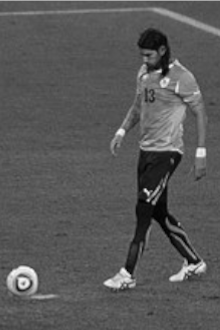

Clarence Clyde Seedorf é um ex-futebolista surinamês naturalizado neerlandês que atuava como meio-campista. Campeão da Liga dos Campeões da UEFA quatro vezes (atuou na fase de grupos da temporada 1999–00 pelo Real Madrid, mas foi transferido antes do mata-mata[1][2]), Seedorf teve passagens brilhantes em vários times. É conhecido por ser o único jogador no mundo a vencer a competição por três equipes diferentes: Ajax, Real Madrid e Milan.[3] Após brilhar na Europa, veio jogar no Brasil e teve grande passagem pelo Botafogo, clube pela qual se aposentou no final de 2013.[4] Logo depois chegou a trabalhar como treinador, tendo comandado o Milan, o Shenzhen, da China, o Deportivo La Coruña e a Seleção Camaronesa.
Clarence Seedorf

Biografia
Loco Abreu
Biografia
Washington Sebastián Abreu Gallo, mais conhecido como Sebastián Abreu, ou Loco Abreu (Minas, 17 de outubro de 1976), é um treinador e ex-futebolista uruguaio que atuava como atacante. É muito conhecido por jogar por mais de 30 times na carreira, e por cobrar penaltis de cavadinha[2]. Se aposentou no dia 11 de Junho de 2021, no seu 31° time na carreira.
Túlio Maravilha
Biografia
Túlio Humberto Pereira Costa, conhecido como Túlio Maravilha, é um ex-futebolista, que atua como atacante, e político brasileiro.[1] Atualmente está sem clube. Foi três vezes artilheiro do Campeonato Brasileiro de Futebol da Série A (1989, 1994 e 1995), um recorde dividido com Romário, Dadá Maravilha e Fred. É o único jogador do futebol brasileiro a ter sido artilheiro em três divisões do futebol nacional - tendo sido o maior goleador da Série B (2008) e da Série C (2002 e 2007). Ficou também conhecido por seu estilo irreverente e pouco modesto, de autopromoção e sem ter papas na língua.[2][3][4][5][6] Começou sua carreira no Goiás em 1987 e em pouco tempo, ganhou projeção nacional. Seu auge veio no Botafogo, onde foi ídolo e ajudou o clube carioca a conquistar o Campeonato Brasileiro de 1995. A boa fase naquele ano lhe rendeu convocação para a Seleção Brasileira que disputou a Copa América de 1995. Depois da passagem destacada pelo Botafogo, Túlio passou por Corinthians, Vitória, Santa Cruz, Fluminense e Cruzeiro, mas sem o mesmo brilho dos tempos de Botafogo. Com sua carreira em declínio, defendeu diversos clubes de menor expressão do futebol nacional.[7] Seu último clube foi o Araxá, no qual chegou ao milésimo gol, pelas contas do próprio Túlio, já que não há registro oficial sobre os 1000 gols que o jogador tenha feito ao longo de sua carreira.[8] Nestas contas, somam-se os gols marcados não apenas em partidas oficiais, mas também em jogo-treino, amistoso e até partida festiva.[9] Na vida pública, Túlio foi eleito vereador por Goiânia em 2008, tendo exercido o cargo até 2011. Na televisão, integrou o elenco da primeira temporada reality show brasileiro da Rede Record Power Couple, juntamente com sua esposa Cristiane Maravilha.[10][11] Atualmente, atua como comentarista do Os Donos da Bola, na Band Rio.


Jairzinho

Biografia
Jair Ventura Filho, mais conhecido como Jairzinho, é um ex-treinador e ex-futebolista brasileiro que atuava como ponta-direita. Um dos heróis da Copa do Mundo FIFA de 1970, ocasião em que o Brasil conquistou em definitivo a Taça Jules Rimet ao sagrar-se tricampeão, foi peça fundamental desta conquista, ganhando o apelido de Furacão da Copa por ter feito gols em todas as partidas — façanha até hoje não igualada por um brasileiro. Com nove gols marcados em 1966, 1970 e 1974 é, ao lado dos pernambucanos Vavá e Ademir de Menezes, o terceiro maior artilheiro da Seleção Brasileira na história das Copas do Mundo. Atacante no Botafogo, usava a camisa 7 quando defendia a Seleção Brasileira, pela qual jogou 107 partidas (81 oficiais) e marcou 44 gols (33 em jogos oficiais). Também participou das Copas de 1966 e 1974. Seu filho, Jair Ventura, foi treinador do Botafogo.